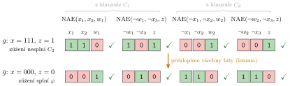
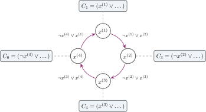
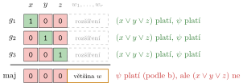

7.3 Úlohy navíc¶
Úlohy procvičují redukce mezi variantami SATu: rozsekávání a doplňování klauzulí pomocnými proměnnými (oddíl 7.1), symetrii NAE a pólovou proměnnou (oddíl 7.2). Poslední úloha ukazuje, proč stejné triky nedají NP-těžkost \(\prob{2-SAT}\)u.
Neoficiální úlohy
Úlohy v tomto oddílu nejsou oficiální zadání předmětu. Jsou to procvičovací úlohy navíc k látce kapitoly; každou konstrukci jsme naprogramovali a ekvivalenci splnitelnosti ověřili hrubou silou na tisících malých náhodných formulí (s kladnými i zápornými odpověďmi), konkrétní ohodnocení a počty dosazením. Důkazy v úloze 7.8 a poznámka o Hallově větě v úloze 7.6 jsou navíc jen ručně odvozené a ověřené na příkladech.
7.3.1 Rozcvička¶
Úloha 7.1 (rozsekání dlouhých klauzulí)
Je dána formule v CNF
- Proveďte redukci \(\prob{SAT}\redp\prob{3-SAT}\) z oddílu 7.1. Pomocné proměnné klauzule \(C_1\) značte \(a_1,a_2,\dots\), klauzule \(C_4\) značte \(b_1,\dots\). Kolik klauzulí a proměnných má výsledná formule \(\varphi'\)?
- Ohodnocení \(h\): \(x_1=0\), \(x_2=1\), \(x_3=1\), \(x_4=0\), \(x_5=0\) splňuje \(\varphi\). Rozšiřte ho podle důkazu lemmatu 7.1 na pomocné proměnné tak, aby splňovalo \(\varphi'\).
- Ohodnocení \(g\): \(x_1=1\), \(x_2=1\), \(x_3=0\), \(x_4=1\), \(x_5=1\), \(a_1=0\), \(a_2=1\), \(b_1=0\) splňuje \(\varphi'\). Ověřte to a přečtěte z \(g\) splňující ohodnocení \(\varphi\). Jsou hodnoty pomocných proměnných v \(g\) ty, které by dal postup z bodu b)?
- Proč musí mít každá dlouhá klauzule vlastní pomocné proměnné? Ukažte to na formuli \(\psi=(x_1\lor x_2\lor x_3\lor x_4)\land(x_3\lor x_4\lor x_5\lor x_6)\land(\lnot x_3)\land(\lnot x_4)\), ve které by obě dlouhé klauzule použily touž pomocnou proměnnou \(z\).
Řešení
Redukce: \(\prob{SAT} \redp \prob{3-SAT}\), formule \(\varphi\) v CNF \(\mapsto\) formule \(\varphi'\) v 3-CNF (krátké klauzule doplníme opakováním literálu, dlouhé rozsekneme).
a) Klauzule zpracujeme každou zvlášť.
- \(C_1\) má \(k=5\) literálů: vznikne \(k-2=3\) klauzulí s \(k-3=2\) novými proměnnými, \((x_1\lor\lnot x_2\lor a_1)\land(\lnot a_1\lor x_3\lor a_2)\land(\lnot a_2\lor\lnot x_4\lor x_5)\).
- \(C_2\) má 2 literály: \((\lnot x_1\lor x_4\lor x_4)\).
- \(C_3\) má 1 literál: \((x_2\lor x_2\lor x_2)\).
- \(C_4\) má \(k=4\) literály: \(k-2=2\) klauzule s jednou novou proměnnou, \((\lnot x_3\lor x_4\lor b_1)\land(\lnot b_1\lor\lnot x_5\lor x_1)\).
Formule \(\varphi'\) má \(3+1+1+2=7\) klauzulí a \(5+3=8\) proměnných (\(x_1,\dots,x_5,a_1,a_2,b_1\)).
b) Podle důkazu lemmatu najdeme v každé dlouhé klauzuli pravdivý literál \(\ell_i\) a položíme \(z_j=1\) pro \(j\le i-2\), \(z_j=0\) pro \(j\ge i-1\).
- \(C_1\): literály mají hodnoty \(x_1=0\), \(\lnot x_2=0\), \(x_3=1\), tedy \(i=3\). Proto \(a_1=1\) (\(1\le i-2\)) a \(a_2=0\).
- \(C_4=(\lnot x_3\lor x_4\lor\lnot x_5\lor x_1)\): hodnoty \(0,0,1,0\), pravdivý je \(\ell_3=\lnot x_5\), tedy \(i=3\) a \(b_1=1\).
Dosazení ukazuje obrázek níže; krátké klauzule \((\lnot x_1\lor x_4\lor x_4)\) a \((x_2\lor x_2\lor x_2)\) splňuje \(\lnot x_1=1\) a \(x_2=1\) stejně jako původní \(C_2\), \(C_3\).

Hodnoty literálů v kouscích \(C_1\) a \(C_4\) při rozšířeném ohodnocení \(h\). Pomocné proměnné jsou v oranžovém rámečku, pravdivý původní literál \(\ell_i\) v zeleném. Všimni si: nalevo od \(\ell_i\) kousky splní \(a_j=1\), napravo \(\lnot a_j=1\) – každý kousek má aspoň jednu jedničku.
c) Dosadíme \(g\) do sedmi klauzulí \(\varphi'\) (vypisujeme hodnoty literálů): \((x_1,\lnot x_2,a_1)=(1,0,0)\), \((\lnot a_1,x_3,a_2)=(1,0,1)\), \((\lnot a_2,\lnot x_4,x_5)=(0,0,1)\), \((\lnot x_1,x_4,x_4)=(0,1,1)\), \((x_2,x_2,x_2)=(1,1,1)\), \((\lnot x_3,x_4,b_1)=(1,1,0)\), \((\lnot b_1,\lnot x_5,x_1)=(1,0,1)\). Každá trojice obsahuje jedničku, \(g\) tedy \(\varphi'\) splňuje.
Splňující ohodnocení \(\varphi\) dostaneme tak, že pomocné proměnné zapomeneme: \(x_1=1\), \(x_2=1\), \(x_3=0\), \(x_4=1\), \(x_5=1\). Kontrola: \(C_1\) splní \(x_1\), \(C_2\) a \(C_4\) splní \(x_4\), \(C_3\) splní \(x_2\). Obecně to zaručuje směr (\(\Leftarrow\)) lemmatu: kdyby zúžení některou klauzuli \(C\) nesplnilo, nesplnilo by žádné rozšíření všechny kousky \(C\).
Postup z bodu b) by pro toto zúžení dal něco jiného: v \(C_1\) je pravdivý už \(\ell_1=x_1\), tedy \(i=1\) a \(a_1=a_2=0\), kdežto \(g\) má \(a_2=1\). To nevadí – lemma říká jen, že nějaké rozšíření existuje, splňujících rozšíření může být víc (\(\varphi\) má 10 splňujících ohodnocení, \(\varphi'\) jich má 30).
d) Se sdílenou proměnnou \(z\) by vznikla formule
Poslední dvě klauzule vynutí \(x_3=x_4=0\). Druhá klauzule pak vynutí \(z=0\) a třetí \(z=1\) – spor, formule je nesplnitelná. Přitom \(\psi\) splnitelná je: \(x_1=x_5=1\), \(x_3=x_4=0\). Redukce by tedy z \(\ANO\)-instance udělala \(\NE\)-instanci. Důvod: hodnoty pomocných proměnných závisí na tom, který literál klauzule je pravdivý (první klauzule \(\psi\) potřebuje \(z=0\), protože pravdivý je \(x_1\) vlevo; druhá potřebuje \(z=1\), protože pravdivý je \(x_5\) vpravo). Proto musí mít každá klauzule své.
Úloha 7.2 (symetrie NAE)
Je dána formule
- Najděte všechna ohodnocení, která \(\Phi\) NAE-splňují (definice 7.2). Využijte lemma 7.3, abyste nemuseli procházet všech 16 ohodnocení.
- Dokažte, že počet NAE-splňujících ohodnocení každé 3-CNF formule (s aspoň jednou proměnnou) je sudý. Platí totéž pro počet splňujících ohodnocení v obyčejném smyslu?
- Ukažte, že \(\Psi=(x\lor y\lor z)\land(x\lor y\lor\lnot z)\land(x\lor\lnot y\lor z)\land(\lnot x\lor y\lor z)\) je splnitelná, ale není NAE-splnitelná.
Řešení
a) Podle lemmatu je \(h\) NAE-splňující, právě když je NAE-splňující překlopené \(\bar h\). Každá dvojice \(\{h,\bar h\}\) obsahuje právě jedno ohodnocení s \(x_1=0\), stačí tedy projít 8 ohodnocení s \(x_1=0\) a ke každému nalezenému přidat jeho doplněk. V tabulce jsou hodnoty literálů jednotlivých klauzulí (ohodnocení píšeme jako \(x_1x_2x_3x_4\)).
| \(x_1x_2x_3x_4\) | \(C_1\) | \(C_2\) | \(C_3\) | \(C_4\) | výsledek |
|---|---|---|---|---|---|
| 0000 | 001 | 100 | 101 | 000 | \(C_4\) samé nuly |
| 0001 | 001 | 101 | 100 | 001 | \(\ANO\) |
| 0010 | 000 | 100 | 111 | 010 | \(C_1\) samé nuly |
| 0011 | 000 | 101 | 110 | 011 | \(C_1\) samé nuly |
| 0100 | 011 | 110 | 001 | 000 | \(C_4\) samé nuly |
| 0101 | 011 | 111 | 000 | 001 | \(C_2\) samé jedničky |
| 0110 | 010 | 110 | 011 | 010 | \(\ANO\) |
| 0111 | 010 | 111 | 010 | 011 | \(C_2\) samé jedničky |
NAE-splňující s \(x_1=0\) jsou \(0001\) a \(0110\), k nim přidáme doplňky \(1110\) a \(1001\). Formule \(\Phi\) má tedy právě 4 NAE-splňující ohodnocení: \(0001\), \(0110\), \(1001\), \(1110\). (Všimněte si řádku \(0111\): ohodnocení formuli \(\Phi\) obyčejně splňuje, ale v \(C_2\) jsou samé jedničky.)
b) Označme \(M\) množinu NAE-splňujících ohodnocení. Zobrazení \(h\mapsto\bar h\) zobrazuje \(M\) do \(M\) (lemma 7.3) a platí \(\bar{\bar h}=h\). Navíc \(\bar h\ne h\), protože se liší v každé proměnné a aspoň jedna proměnná existuje. Množina \(M\) se proto rozpadá na disjunktní dvojice \(\{h,\bar h\}\) a \(|M|\) je sudé.
Pro obyčejnou splnitelnost to neplatí: \((x_1\lor x_2\lor x_3)\) má 7 splňujících ohodnocení (všechna kromě \(000\)). Formule \(\Phi\) jich má 8, ale to je náhoda – překlopení splňující ohodnocení obecně nezachovává.
c) \(\Psi\) je splnitelná: při \(x=y=z=1\) má každá klauzule pravdivý literál (první tři \(x\), poslední \(y\)).
NAE-klauzule nad proměnnými \(x,y,z\) zakazuje přesně dvě ohodnocení \((x,y,z)\): to, při kterém jsou všechny tři literály nepravdivé, a jeho doplněk (všechny pravdivé). Klauzule \(\Psi\) tedy zakazují:
- \((x\lor y\lor z)\): \(000\) a \(111\);
- \((x\lor y\lor\lnot z)\): \(001\) a \(110\);
- \((x\lor\lnot y\lor z)\): \(010\) a \(101\);
- \((\lnot x\lor y\lor z)\): \(100\) a \(011\).
Dohromady je zakázáno všech 8 ohodnocení, \(\Psi\) proto NAE-splnitelná není. (Totéž jinak: \(\mathrm{NAE}(\ell_1,\ell_2,\ell_3)\) platí, právě když platí \((\ell_1\lor\ell_2\lor\ell_3)\land(\lnot\ell_1\lor\lnot\ell_2\lor\lnot\ell_3)\). Připojíme-li ke \(\Psi\) klauzule s opačnými literály, dostaneme všech 8 klauzulí nad \(x,y,z\), a ty splnit nejde.)
Úloha 7.3 (3-SAT na NAE-3-SAT krok za krokem)
Je dána formule \(\varphi=(x_1\lor x_2\lor\lnot x_3)\land(\lnot x_1\lor\lnot x_2\lor\lnot x_3)\).
- Sestrojte formuli \(\varphi'\) (NAE-4-SAT, pólová proměnná \(z\)) a formuli \(\varphi''\) (NAE-3-SAT, pomocné proměnné \(w_1,w_2\)) podle oddílu 7.2.1. Kolik má \(\varphi''\) proměnných a klauzulí? Kolik obecně pro formuli s \(n\) proměnnými a \(m\) klauzulemi?
- Ohodnocení \(h\): \(x_1=x_2=x_3=0\) splňuje \(\varphi\). Doplňte hodnoty \(z,w_1,w_2\) tak, aby výsledek NAE-splňoval \(\varphi''\). Najděte obecné pravidlo pro volbu \(w\).
- Ohodnocení \(g\): \(x_1=x_2=x_3=1\), \(w_1=0\), \(w_2=1\), \(z=1\) NAE-splňuje \(\varphi''\). Splňuje jeho zúžení na \(x_1,x_2,x_3\) formuli \(\varphi\)? Jak z \(g\) dostanete splňující ohodnocení \(\varphi\)?
Řešení
Redukce: \(\prob{3-SAT} \redp \prob{NAE-3-SAT}\), formule \(\varphi\) \(\mapsto\) \(\varphi''\) (přes NAE-4-SAT s pólovou proměnnou \(z\), pak rozbití každé 4-klauzule proměnnou \(w_j\)).
a) Ke každé klauzuli přidáme společnou proměnnou \(z\):
Každou 4-klauzuli \(\mathrm{NAE}(\ell_1,\ell_2,\ell_3,z)\) rozbijeme na \(\mathrm{NAE}(\ell_1,\ell_2,w)\land\mathrm{NAE}(\lnot w,\ell_3,z)\) s vlastní proměnnou \(w\):
\(\varphi''\) má 6 proměnných (\(x_1,x_2,x_3,z,w_1,w_2\)) a 4 klauzule. Obecně: \(n+1+m\) proměnných (jedna \(z\) a jedna \(w_j\) na klauzuli) a \(2m\) klauzulí.
b) Položíme \(z=0\) (směr (\(\Rightarrow\)) věty 7.4). Pravidlo pro \(w\) u klauzule \((\ell_1\lor\ell_2\lor\ell_3)\) splněné ohodnocením \(h\): \(w=1\), právě když \(\ell_1=\ell_2=0\). Zdůvodnění:
- Je-li \(\ell_1=\ell_2=0\), musí být \(w=1\), jinak je první klauzule \((0,0,0)\). Druhá klauzule je \((\lnot w,\ell_3,z)=(0,\ell_3,0)\) a je NAE, protože \(\ell_3=1\) (klauzule je splněná a \(\ell_1=\ell_2=0\)).
- Jinak je mezi \(\ell_1,\ell_2\) jednička a s \(w=0\) je první klauzule NAE. Druhá je \((1,\ell_3,0)\), tedy také NAE.
Pro \(h\): v \(C_1\) je \(\ell_1=x_1=0\), \(\ell_2=x_2=0\), tedy \(w_1=1\); v \(C_2\) je \(\ell_1=\lnot x_1=1\), tedy \(w_2=0\). Hodnoty literálů čtyř klauzulí \(\varphi''\) jsou \((0,0,1)\), \((0,1,0)\), \((1,1,0)\), \((1,1,0)\) – žádná trojice není samé nuly ani samé jedničky (spodní řádek obrázku níže).
c) Zúžení \(x_1=x_2=x_3=1\) formuli \(\varphi\) nesplňuje: \(C_2=(\lnot x_1\lor\lnot x_2\lor\lnot x_3)=(0\lor0\lor0)\). To není chyba redukce. Při \(z=1\) dodává jedničku do každé 4-klauzule proměnná \(z\) a NAE od původních literálů vynutí jen aspoň jednu nulu – zúžení splňuje formuli s opačnými literály, ne \(\varphi\).
Podle lemmatu 7.3 proto překlopíme všechny hodnoty: \(\bar g\): \(x_1=x_2=x_3=0\), \(w_1=1\), \(w_2=0\), \(z=0\). Je to opět NAE-řešení a teď \(z=0\), takže každá 4-klauzule musí mít jedničku mezi \(\ell_1,\ell_2,\ell_3\): zúžení \(x_1=x_2=x_3=0\) splňuje \(\varphi\) (\(C_1\) splní \(\lnot x_3\), \(C_2\) splní \(\lnot x_1\)). Je to přesně ohodnocení z bodu b).

Hodnoty literálů čtyř klauzulí \(\varphi''\) pro \(g\) (nahoře) a pro překlopené \(\bar g\) (dole). Obě ohodnocení jsou NAE-řešení. Všimni si: při \(z=1\) (nahoře) mají literály původní \(C_2\), tedy \(\lnot x_1,\lnot x_2,\lnot x_3\), samé nuly; po překlopení je \(z=0\) a jedničku musí dodat původní literály.
7.3.2 Na úrovni testu¶
Úloha 7.4 (Double-SAT)
Problém \(\prob{Double-SAT}\): je dána formule \(\varphi\) v CNF; má \(\varphi\) aspoň dvě různá splňující ohodnocení?
Dokažte, že \(\prob{Double-SAT}\) je NP-úplný. Nápověda: převádějte z problému SAT.
Řešení
Redukce: \(\prob{SAT} \redp \prob{Double-SAT}\), formule \(\varphi\) \(\mapsto\) \(\varphi'=\varphi\land(y\lor\lnot y)\) s novou proměnnou \(y\).
1. Double-SAT je v \(\NP\). Certifikát je dvojice ohodnocení \(h_1,h_2\) proměnných \(\varphi\). Verifikátor zkontroluje, že se liší aspoň v jedné proměnné a že obě splňují \(\varphi\) (dosazení do každé klauzule). Certifikát má \(2n\) bitů, kontrola trvá \(O(n+|\varphi|)\).
2. Konstrukce. Nechť \(\varphi\) má proměnné \(x_1,\dots,x_n\). Zvolíme novou proměnnou \(y\), která v \(\varphi\) není, a položíme \(\varphi'=\varphi\land(y\lor\lnot y)\). Klauzule \((y\lor\lnot y)\) je vždy pravdivá; slouží jen k tomu, aby \(y\) byla proměnnou \(\varphi'\) a ohodnocení \(\varphi'\) jí přiřazovalo hodnotu.
3. Polynomialita. Přidáme jednu klauzuli se dvěma literály, výstup sestrojíme v čase \(O(|\varphi|)\).
4. (\(\Rightarrow\)) Nechť \(h\) splňuje \(\varphi\). Ohodnocení \(h_0=h\cup\{y=0\}\) a \(h_1=h\cup\{y=1\}\) jsou různá (liší se v \(y\)). Obě splňují \(\varphi\), protože \(\varphi\) proměnnou \(y\) neobsahuje a na \(x_1,\dots,x_n\) se shodují s \(h\), a obě splňují \((y\lor\lnot y)\). \(\varphi'\) má tedy aspoň dvě splňující ohodnocení.
5. (\(\Leftarrow\)) Nechť \(\varphi'\) má aspoň dvě splňující ohodnocení; vezmeme kterékoli z nich, \(g\). Protože \(g\) splňuje konjunkci, splňuje i \(\varphi\), a protože \(\varphi\) neobsahuje \(y\), splňuje ji i zúžení \(g\) na \(x_1,\dots,x_n\). \(\varphi\) je splnitelná.
6. Závěr. \(\prob{SAT}\) je NP-úplný (věta Cook–Levin, definice 6.1) a \(\prob{SAT}\redp\prob{Double-SAT}\), tedy \(\prob{Double-SAT}\) je NP-těžký a podle bodu 1 NP-úplný.
Typická chyba. Identita \(\varphi\mapsto\varphi\) redukcí není: formule \((x_1)\land(x_2)\) je splnitelná, ale má jediné splňující ohodnocení. Nová proměnná \(y\) počet splňujících ohodnocení přesně zdvojnásobí, takže „aspoň jedno“ se změní na „aspoň dvě“. Pro 3-CNF stačí místo \((y\lor\lnot y)\) klauzule \((y\lor\lnot y\lor\lnot y)\); NP-úplný je tedy i \(\prob{Double-3-SAT}\).
Úloha 7.5 (přesně tři různé proměnné v klauzuli)
Redukce \(\prob{SAT}\redp\prob{3-SAT}\) z oddílu 7.1 vyrábí klauzule jako \((\ell\lor\ell\lor\ell)\) s opakovaným literálem. Problém \(\prob{E3-SAT}\): je dána formule v CNF, kde každá klauzule obsahuje přesně tři literály s navzájem různými proměnnými (tedy ani dvakrát týž literál, ani \(x\) a \(\lnot x\) v téže klauzuli); je splnitelná?
- Dokažte, že \(\prob{E3-SAT}\) je NP-úplný. Převádějte z \(\prob{3-SAT}\) ve smyslu kapitoly (klauzule mají 3 literály, které se mohou opakovat, např. \((x\lor x\lor\lnot y)\)).
- Ukažte, že je NP-úplný i \(\prob{E4-SAT}\) (přesně čtyři literály s různými proměnnými v každé klauzuli).
Řešení
Redukce: \(\prob{3-SAT} \redp \prob{E3-SAT}\), formule \(\varphi\) \(\mapsto\) \(\varphi_E\) (krátké klauzule doplníme dvěma novými proměnnými \(a,b\) ve všech kombinacích znamének).
a) 1. E3-SAT je v \(\NP\). Certifikát je ohodnocení, dosadíme do všech klauzulí v čase \(O(|\varphi|)\).
2. Konstrukce. Zvolíme dvě nové proměnné \(a,b\), společné pro celou formuli. Každou klauzuli \(C\) formule \(\varphi\) zpracujeme takto:
- Obsahuje-li \(C\) současně \(x\) i \(\lnot x\), je vždy pravdivá – vynecháme ji.
- Jinak z ní odstraníme opakované literály. Zbudou 1, 2 nebo 3 různé literály, a to s různými proměnnými.
- Tři literály: klauzuli necháme.
- Dva literály \((\ell_1\lor\ell_2)\): nahradíme ji dvojicí \((\ell_1\lor\ell_2\lor a)\land(\ell_1\lor\ell_2\lor\lnot a)\).
- Jeden literál \((\ell)\): nahradíme ho čtveřicí \((\ell\lor a\lor b)\land(\ell\lor a\lor\lnot b)\land(\ell\lor\lnot a\lor b)\land(\ell\lor\lnot a\lor\lnot b)\).
Vynecháme-li tak všechny klauzule (\(\varphi\) je pak splnitelná), vypíšeme pevnou \(\ANO\)-instanci \((x_1\lor x_2\lor x_3)\). Proměnné \(a,b\) jsou nové, takže každá vzniklá klauzule má tři různé proměnné.
Klíčové pozorování. Náhrada je s původní klauzulí ekvivalentní pro každou hodnotu \(a,b\). Při \(a=0\) je \((\ell_1\lor\ell_2\lor a)\) rovno \((\ell_1\lor\ell_2)\) a \((\ell_1\lor\ell_2\lor\lnot a)\) je pravdivá; při \(a=1\) naopak. U čtveřice má pro dané \(a,b\) právě jedna klauzule oba pomocné literály nepravdivé a ta je rovna \((\ell)\), ostatní tři jsou pravdivé. Odstranění opakovaného literálu pravdivostní hodnotu klauzule nemění.
3. Polynomialita. Každá klauzule dá nejvýše 4 klauzule, přibudou 2 proměnné; \(|\varphi_E|=O(|\varphi|)\), konstrukce je jeden průchod formulí.
4. (\(\Rightarrow\)) Nechť \(h\) splňuje \(\varphi\). Rozšíříme ho libovolně, např. \(a=b=0\). Každá klauzule \(\varphi_E\) pochází z některé nevynechané klauzule \(C\), která je při \(h\) pravdivá, a podle pozorování je pak pravdivá i celá její náhrada. (Pevná instance je splnitelná vždy.)
5. (\(\Leftarrow\)) Nechť \(g\) splňuje \(\varphi_E\). Je-li \(\varphi_E\) pevnou instancí, byly všechny klauzule \(\varphi\) vždy pravdivé a \(\varphi\) je splnitelná. Jinak vezmeme zúžení \(g\) na proměnné \(\varphi\). Vynechané klauzule jsou pravdivé vždy. Pro každou ostatní klauzuli \(C\) je její náhrada při \(g\) pravdivá a při hodnotách \(g(a),g(b)\) je podle pozorování ekvivalentní s \(C\) – tedy \(C\) je pravdivá. Zúžení splňuje \(\varphi\).
6. Závěr. \(\prob{3-SAT}\) je NP-úplný, tedy \(\prob{E3-SAT}\) je NP-těžký a podle bodu 1 NP-úplný.
Proč tu smějí být \(a,b\) společné. V úloze Úloha 7.1 (rozsekání dlouhých klauzulí) d) sdílená proměnná redukci rozbila, protože hodnotu \(z_j\) jsme volili podle toho, který literál je pravdivý. Tady se nic nevolí: náhrada je ekvivalentní s \(C\) při každé hodnotě \(a,b\), takže jedna dvojice \(a,b\) poslouží všem klauzulím.
b) Redukce: \(\prob{E3-SAT} \redp \prob{E4-SAT}\), formule \(\psi\) \(\mapsto\) \(\psi_4\): s jednou novou proměnnou \(c\) nahradíme každou klauzuli \(C\) dvojicí \((C\lor c)\land(C\lor\lnot c)\). \(C\) má tři různé proměnné a \(c\) je nová, takže vzniklé klauzule mají čtyři různé proměnné. Pro \(c=0\) je dvojice rovna \(C\), pro \(c=1\) také (role klauzulí se prohodí), takže stejně jako v a): (\(\Rightarrow\)) splňující ohodnocení \(\psi\) rozšíříme libovolnou hodnotou \(c\); (\(\Leftarrow\)) zúžení splňujícího ohodnocení \(\psi_4\) splňuje \(\psi\). Výstup má \(2m\) klauzulí, \(\prob{E4-SAT}\in\NP\) (certifikát je ohodnocení) a složením s a) je \(\prob{E4-SAT}\) NP-úplný. Opakováním dostaneme NP-úplnost \(\prob{Ek-SAT}\) pro každé pevné \(k\ge3\).
Úloha 7.6 (každá proměnná nejvýše třikrát)
Problém \(\prob{3-SAT-3}\): je dána formule v CNF, ve které má každá klauzule nejvýše tři literály a každá proměnná se vyskytuje nejvýše třikrát (výskyty \(x\) a \(\lnot x\) počítáme dohromady); je splnitelná?
Dokažte, že \(\prob{3-SAT-3}\) je NP-úplný. Nápověda: převádějte z 3-SAT; výskyty nahraďte kopiemi a jejich rovnost vynuťte kruhem implikací.
Řešení
Redukce: \(\prob{3-SAT} \redp \prob{3-SAT-3}\), formule \(\varphi\) \(\mapsto\) \(\varphi_3\) (každý výskyt proměnné dostane vlastní kopii, kopie téže proměnné spojí cyklus implikací).
1. 3-SAT-3 je v \(\NP\). Certifikát je ohodnocení; dosazení trvá \(O(|\varphi|)\).
2. Konstrukce. Nechť \(\varphi=C_1\land\dots\land C_m\), každá klauzule má 3 literály. Pro každou proměnnou \(x\) s \(k\) výskyty (výskyt = pozice v klauzuli, v \((x\lor x\lor\lnot y)\) má \(x\) dva výskyty):
- zavedeme nové proměnné \(x^{(1)},\dots,x^{(k)}\) a \(i\)-tý výskyt \(x\) nahradíme kopií \(x^{(i)}\) se stejným znaménkem (\(x\mapsto x^{(i)}\), \(\lnot x\mapsto\lnot x^{(i)}\));
- je-li \(k\ge2\), přidáme \(k\) klauzulí \((\lnot x^{(1)}\lor x^{(2)})\land(\lnot x^{(2)}\lor x^{(3)})\land\dots\land(\lnot x^{(k-1)}\lor x^{(k)})\land(\lnot x^{(k)}\lor x^{(1)})\), tedy implikace \(x^{(1)}\Rightarrow x^{(2)}\Rightarrow\dots\Rightarrow x^{(k)}\Rightarrow x^{(1)}\).
Počet výskytů. Kopie \(x^{(i)}\) je jednou v klauzuli původního výskytu a pro \(k\ge2\) dvakrát v cyklu: kladně v \((\lnot x^{(i-1)}\lor x^{(i)})\) a záporně v \((\lnot x^{(i)}\lor x^{(i+1)})\) (indexy cyklicky). Celkem nejvýše 3. Původní klauzule mají 3 literály, cyklické 2.

Proměnná \(x\) se čtyřmi výskyty (kladně v \(C_1\), \(C_4\), záporně v \(C_3\), \(C_6\)). Každý výskyt dostane vlastní kopii (čárkovaně), kopie spojuje orientovaný cyklus implikací. Všimni si: každá kopie má právě tři výskyty – jeden ve své klauzuli, jeden na vstupní a jeden na výstupní šipce.
3. Polynomialita. Výskytů je celkem \(3m\), vznikne tedy \(3m\) proměnných a nejvýše \(3m\) dvouprvkových klauzulí, celkem nejvýše \(4m\) klauzulí. Konstrukce je jeden průchod formulí s počítadlem výskytů.
4. (\(\Rightarrow\)) Nechť \(h\) splňuje \(\varphi\). Položíme \(x^{(i)}=h(x)\) pro všechny kopie. Každá původní klauzule má v \(\varphi_3\) stejné hodnoty literálů jako v \(\varphi\), je tedy pravdivá. Každá cyklická klauzule \((\lnot x^{(i)}\lor x^{(i+1)})\) je implikace mezi dvěma stejnými hodnotami, je tedy pravdivá.
5. (\(\Leftarrow\)) Nechť \(g\) splňuje \(\varphi_3\). Tvrzení: všechny kopie téže proměnné mají v \(g\) stejnou hodnotu. Je-li \(g(x^{(i)})=1\), implikace \(x^{(i)}\Rightarrow x^{(i+1)}\Rightarrow\dots\) po obvodu cyklu vynutí \(g(x^{(j)})=1\) pro všechna \(j\). Kopie jsou tedy buď všechny 1, nebo všechny 0. Položíme \(h(x)\) rovno této společné hodnotě. Každá klauzule \(C_j\) má pak při \(h\) stejné hodnoty literálů jako její obraz při \(g\), takže \(h\) splňuje \(\varphi\).
6. Závěr. \(\prob{3-SAT}\) je NP-úplný, tedy \(\prob{3-SAT-3}\) je NP-těžký a podle bodu 1 NP-úplný.
Proč cyklus, a ne cesta. S implikacemi jen \(x^{(1)}\Rightarrow\dots\Rightarrow x^{(k)}\) (bez poslední klauzule) smějí kopie mít hodnoty \(0\dots01\dots1\). Formule \((\lnot x\lor\lnot x\lor\lnot x)\land(x\lor x\lor x)\) je nesplnitelná, ale s kopiemi \(x^{(1)},\dots,x^{(6)}\) a cestou je splnitelná: kopie \(0,0,0,1,1,1\) splní všechny implikace cesty, \(x^{(1)}=0\) splní první klauzuli a \(x^{(4)}=1\) druhou. Až uzavření cyklu vynutí rovnost.
Poznámka (nad rámec přednášky). Klauzule s méně než třemi různými proměnnými (u nás dvouprvkové klauzule cyklu) jsou nutné. Tovey (1984) dokázal: má-li každá klauzule přesně tři literály s navzájem různými proměnnými a vyskytuje-li se každá proměnná nejvýše třikrát, je formule vždy splnitelná. Důkaz: libovolných \(t\) klauzulí má dohromady \(3t\) výskytů proměnných a každá proměnná pokryje nejvýše 3 z nich, takže tyto klauzule obsahují aspoň \(t\) různých proměnných. Podle Hallovy věty lze každé klauzuli přidělit vlastní proměnnou a tu nastavit tak, aby klauzuli splnila. Takový problém je triviální (odpověď je vždy \(\ANO\)). Připustíme-li nejvýše čtyři výskyty každé proměnné, je problém opět NP-úplný (také Tovey).
Úloha 7.7 (monotónní 3-SAT)
Klauzule je monotónní, jsou-li všechny její literály kladné, nebo všechny záporné. Problém \(\prob{Monotónní 3-SAT}\): je dána 3-CNF formule (3 literály v klauzuli, opakování dovoleno), jejíž každá klauzule je monotónní; je splnitelná?
- Dokažte, že \(\prob{Monotónní 3-SAT}\) je NP-úplný.
- Ukažte, že kdyby byly všechny klauzule kladné (nebo všechny záporné), byl by problém triviální. Proč u pozitivního \(\prob{NAE-3-SAT}\) (oddíl 7.2.4) kladné klauzule stačí?
Řešení
Redukce: \(\prob{3-SAT} \redp \prob{Monotónní 3-SAT}\), formule \(\varphi\) \(\mapsto\) \(\varphi_M\) (záporné literály \(\lnot x\) nahradíme „stínem“ \(x'\), vztah \(x'=\lnot x\) vynutí jedna kladná a jedna záporná klauzule).
a) 1. Problém je v \(\NP\). Certifikát je ohodnocení, dosazení trvá \(O(|\varphi|)\).
2. Konstrukce. Nechť \(\varphi\) má proměnné \(x_1,\dots,x_n\) a klauzule \(C_1,\dots,C_m\).
- Pro každou proměnnou \(x\) zavedeme novou proměnnou \(x'\) (stín, jako v redukci Redukce: NAE-3-SAT ≤ₚ Pozitivní NAE-3-SAT).
- V každé klauzuli nahradíme každý záporný literál \(\lnot x\) kladným \(x'\). Všechny klauzule \(C_j\) se tím stanou kladnými.
- Pro každou proměnnou \(x\) přidáme kladnou klauzuli \((x\lor x'\lor x')\) a zápornou \((\lnot x\lor\lnot x'\lor\lnot x')\).
Například \((x_1\lor\lnot x_2\lor x_3)\mapsto(x_1\lor x_2'\lor x_3)\).
3. Polynomialita. \(\varphi_M\) má \(2n\) proměnných a \(m+2n\) klauzulí, sestrojí se jedním průchodem.
4. (\(\Rightarrow\)) Nechť \(h\) splňuje \(\varphi\). Položíme \(x=h(x)\) a \(x'=1-h(x)\). Literál \(x'\) má pak stejnou hodnotu jako \(\lnot x\), takže každá upravená klauzule \(C_j\) má stejné hodnoty literálů jako původní a je pravdivá. Z dvojice \(x,x'\) je právě jedna 1 a jedna 0, takže \((x\lor x'\lor x')\) i \((\lnot x\lor\lnot x'\lor\lnot x')\) platí.
5. (\(\Leftarrow\)) Nechť \(g\) splňuje \(\varphi_M\). Klauzule \((x\lor x'\lor x')\) říká, že aspoň jedna z \(x,x'\) je 1, klauzule \((\lnot x\lor\lnot x'\lor\lnot x')\), že aspoň jedna je 0. Tedy \(g(x')=1-g(x)\) pro každé \(x\). Zúžení \(g\) na \(x_1,\dots,x_n\) dává každému literálu \(\lnot x\) hodnotu \(1-g(x)=g(x')\), tedy každá klauzule \(C_j\) má stejné hodnoty jako její upravená verze, která je pravdivá. \(\varphi\) je splnitelná.
6. Závěr. \(\prob{3-SAT}\) je NP-úplný, tedy \(\prob{Monotónní 3-SAT}\) je NP-těžký a podle bodu 1 NP-úplný. (Kladné klauzule \((x\lor x'\lor x')\) lze dokonce vynechat. Bez nich víme jen, že \(x,x'\) nejsou obě 1, a to stačí: je-li \(g(x')=1\), je \(g(x)=0\) a literál \(\lnot x\) je při zúžení pravdivý, takže pravdivý literál každé upravené klauzule \(C_j\) odpovídá pravdivému literálu původní \(C_j\).)
b) Jsou-li všechny klauzule kladné, splní je ohodnocení „vše 1“; jsou-li všechny záporné, splní je „vše 0“. Odpověď je pak vždy \(\ANO\). Těžkost vzniká až kombinací: kladná klauzule umí říct „aspoň jedna 1“, záporná „aspoň jedna 0“ a teprve obojí dohromady vynutí \(x'=\lnot x\). (To jsou triviální rodiny „1-valid“ a „0-valid“ ze Schaeferovy dichotomie v oddílu 14.1.4.)
U NAE je situace jiná: jedna kladná NAE-klauzule zakazuje samé nuly i samé jedničky, tedy říká „aspoň jedna 1 a aspoň jedna 0“ zároveň. Ohodnocení „vše 1“ ani „vše 0“ ji nesplní, a proto pozitivní \(\prob{NAE-3-SAT}\) triviální není a negace jdou simulovat jen kladnými klauzulemi (gadget \(F,T,B\) v obr. 7.4).
7.3.3 Těžší úlohy¶
Úloha 7.8 (proč stejný trik nedá těžkost 2-SAT)
\(\prob{2-SAT}\) (klauzule nejvýše se dvěma literály) je v \(\PP\) (oddíl 12.5), přestože \(\prob{3-SAT}\) je NP-úplný. Úloha ukazuje, proč na 2-SAT nejde přenést rozsekání z oddílu 7.1. Části b)–d) jsou (nad rámec přednášky).
- Ukažte, že \(\exists z:\ (a\lor z)\land(\lnot z\lor b)\) platí, právě když platí \((a\lor b)\). Vysvětlete, kde se konstrukce z oddílu 7.1 zasekne, chceme-li klauzuli \((\ell_1\lor\ell_2\lor\ell_3)\) nahradit 2-klauzulemi.
- Pro ohodnocení \(h_1,h_2,h_3\) definujme většinu \(\mathrm{maj}(h_1,h_2,h_3)\): každá proměnná dostane hodnotu, kterou má v aspoň dvou ze tří ohodnocení. Dokažte: splňují-li \(h_1,h_2,h_3\) formuli \(\psi\) v 2-CNF, splňuje ji i \(\mathrm{maj}(h_1,h_2,h_3)\).
- Dokažte, že neexistuje 2-CNF formule \(\psi(x,y,z,w_1,\dots,w_r)\) taková, že pro každé ohodnocení \(x,y,z\) platí: \((x\lor y\lor z)\) je pravdivá \(\iff\) existují hodnoty \(w_1,\dots,w_r\), při kterých je \(\psi\) pravdivá.
- Plyne z c), že redukce \(\prob{3-SAT}\redp\prob{2-SAT}\) neexistuje?
Řešení
a) Při \(z=0\) je formule rovna \((a\lor0)\land1=a\), při \(z=1\) je rovna \(1\land(0\lor b)=b\). Existuje tedy vhodné \(z\), právě když \(a=1\) nebo \(b=1\), tj. \((a\lor b)\). (Je to rezoluce: proměnná \(z\) zmizí a zbude spojení zbytků.)
V oddílu má každý kousek tvar \((\lnot z_{j-1}\lor\ell_{j+1}\lor z_j)\): „vstup“ \(\lnot z_{j-1}\), jeden původní literál a „výstup“ \(z_j\). To jsou tři literály. Ve 2-klauzulích se vejdou jen krajní kousky \((\ell_1\lor z_1)\) a \((\lnot z_1\lor\ell_2)\), a ty podle výpočtu výše vyjadřují jen \((\ell_1\lor\ell_2)\). Na \(\ell_3\) už nezbývá místo: kousek \((\lnot z_1\lor\ell_2\lor z_2)\) by měl tři literály. Že to nejde ani jinak (s libovolnými pomocnými proměnnými), ukazují b) a c).
b) Jednotkovou klauzuli \((\ell)\) chápeme jako \((\ell\lor\ell)\). Vezmeme libovolnou klauzuli \((\ell\lor\ell')\) formule \(\psi\). Každé z ohodnocení \(h_1,h_2,h_3\) ji splňuje, tedy dělá pravdivým \(\ell\) nebo \(\ell'\). Tři ohodnocení, dva literály: podle Dirichletova principu je jeden z nich, řekněme \(\ell\), pravdivý v aspoň dvou z \(h_1,h_2,h_3\). Nechť \(\ell\) je literál proměnné \(v\). Pak \(v\) má v aspoň dvou ohodnoceních tu hodnotu, při které je \(\ell\) pravdivý (\(1\) pro \(\ell=v\), \(0\) pro \(\ell=\lnot v\)), a \(\mathrm{maj}\) dá proměnné \(v\) právě tuto hodnotu. Literál \(\ell\) je tedy při \(\mathrm{maj}(h_1,h_2,h_3)\) pravdivý a klauzule splněná. To platí pro každou klauzuli, takže \(\mathrm{maj}(h_1,h_2,h_3)\) splňuje \(\psi\).
c) Sporem: nechť taková \(\psi\) existuje. Ohodnocení \((x,y,z)=(1,0,0)\), \((0,1,0)\), \((0,0,1)\) splňují \((x\lor y\lor z)\), existují tedy jejich rozšíření \(g_1,g_2,g_3\) na \(w_1,\dots,w_r\), která splňují \(\psi\). Podle b) splňuje \(\psi\) i \(g=\mathrm{maj}(g_1,g_2,g_3)\). Většina se počítá po proměnných, takže na \(x,y,z\) je \(g\) většinou z \((1,0,0)\), \((0,1,0)\), \((0,0,1)\): každá z \(x,y,z\) má jedničku jen v jednom ze tří, tedy \(g(x)=g(y)=g(z)=0\). Ohodnocení \((0,0,0)\) má tedy rozšíření \(g\) splňující \(\psi\), takže podle předpokladu by \((x\lor y\lor z)\) byla při \((0,0,0)\) pravdivá. Spor.

Důkaz části c): tři ohodnocení s jedinou jedničkou mezi \(x,y,z\) a jejich většina \(000\). Všimni si: 2-CNF „nepozná“, že se většina od všech tří liší, zatímco klauzule \((x\lor y\lor z)\) ano.
Důsledek: redukci, která (jako v oddílu 7.1) nahradí každou klauzuli \(C\) vlastní 2-CNF formulí \(\psi_C\) s novými pomocnými proměnnými tak, že (jako v lemmatu 7.1) \(C\) platí, právě když lze \(\psi_C\) splnit vhodnými hodnotami pomocných proměnných, sestrojit nelze – pro klauzuli \((x\lor y\lor z)\) by \(\psi_C\) byla právě formule \(\psi\) z bodu c).
d) Ne. Část c) vylučuje jen redukce „klauzule po klauzuli“ s pomocnými proměnnými, jejichž náhrada je s klauzulí ekvivalentní jako v lemmatu 7.1. Obecná polynomiální redukce smí s formulí dělat cokoli. O existenci \(\prob{3-SAT}\redp\prob{2-SAT}\) platí přesně: existuje, právě když \(\PP=\NP\). Kdyby existovala, plynulo by z \(\prob{2-SAT}\in\PP\), že \(\prob{3-SAT}\in\PP\), a tedy \(\PP=\NP\). Naopak je-li \(\PP=\NP\), redukce rozhodne \(\prob{3-SAT}\) v polynomiálním čase sama a vypíše pevnou \(\ANO\)-instanci \((x)\), nebo pevnou \(\NE\)-instanci \((x)\land(\lnot x)\) problému \(\prob{2-SAT}\). Protože otázka \(\PP\) vs. \(\NP\) je otevřená, nevíme ani, zda redukce existuje – víme jen, že přímočarý trik z kapitoly nefunguje.